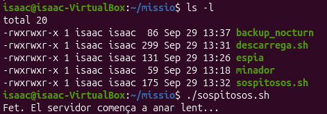
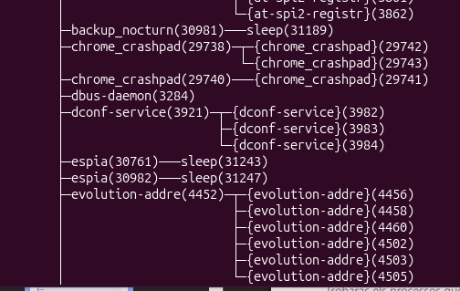
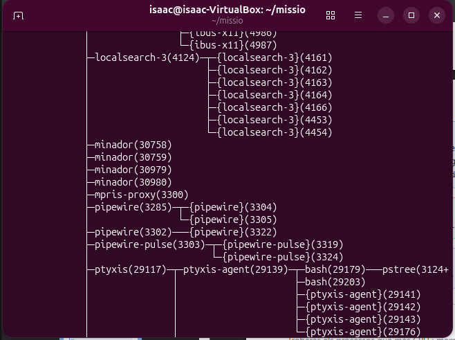
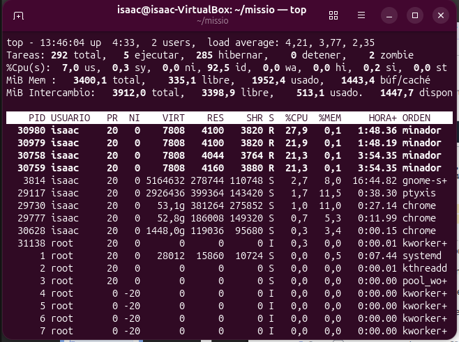
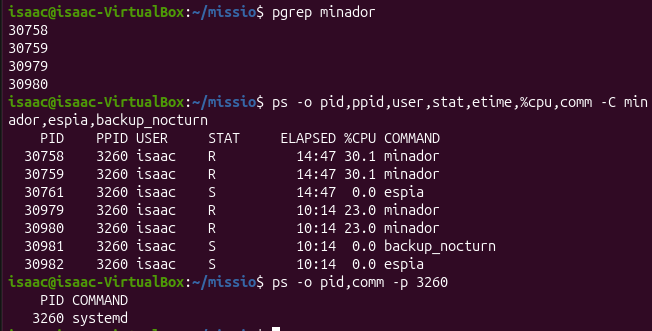
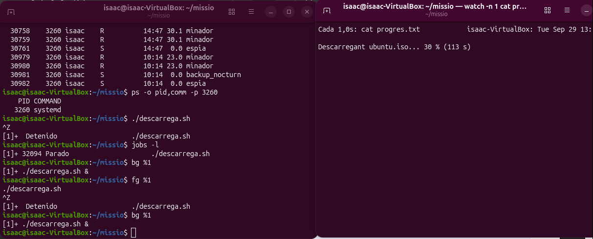
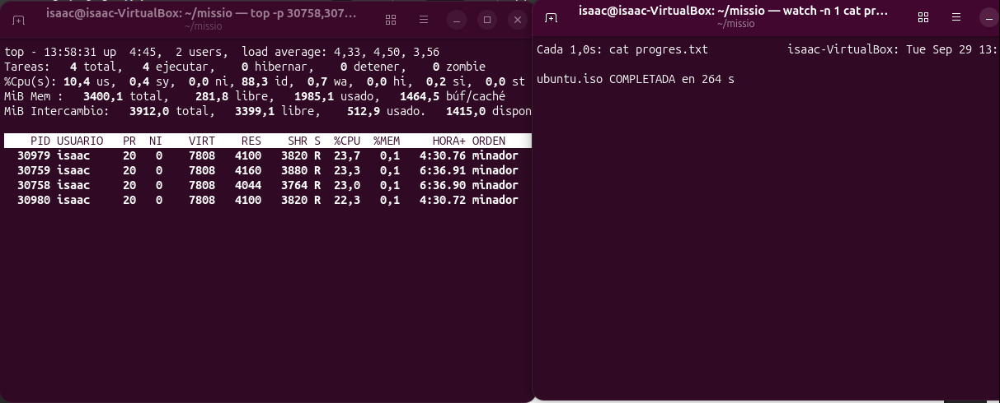
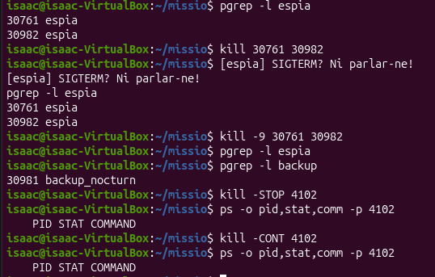
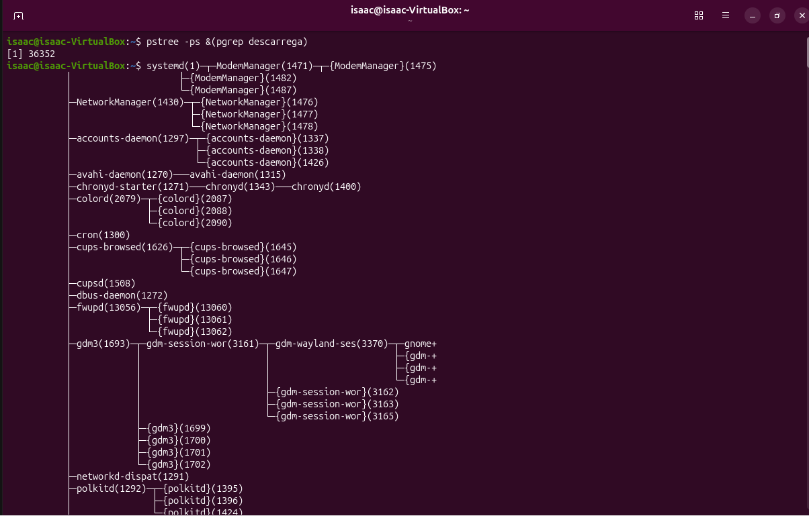

1. Gestió de processos
Captura 1 · Preparació dels scripts i inici del sabotatge
He creat els cinc scripts de la missió dins la carpeta ~/missio i els he donat permisos d'execució, tal com es veu amb l'ordre ls -l on tots apareixen amb la x i en color verd. Després, he executat ./sospitosos.sh per posar en marxa els processos del sabotatge en segon pla i ha sortit el missatge indicant que el servidor comença a anar lent.

Captura 2 · Arbre de processos (part 1)
He executat pstree -p $USER per veure l'arbre de processos del meu usuari. En aquesta primera part he localitzat el procés backup_nocturn i els dos processos espia amb els seus respectius fills sleep penjant de systemd.

Captura 3 · Arbre de processos (part 2)
Com que l'arbre de processos no cabia en una sola pantalla, he fet aquesta segona captura de pstree -p $USER on es veuen els quatre processos minador i la branca del meu terminal ptyxis amb bash i pstree.

Captura 4 · Detecció del consum de CPU amb top
He obert top i he ordenat la llista per ús de CPU per trobar què alentiva el servidor. A dalt de tot he pogut comprovar que els quatre processos minador són els que més CPU consumeixen.

Captura 5 · Inspecció detallada amb pgrep i ps
He buscat els PID dels minadors amb pgrep minador i he utilitzat ps -o per veure les columnes detallades dels processos minador, espia i backup_nocturn. Després, he consultat el PPID 3260 amb ps -o pid,comm -p 3260 i he comprovat que el seu procés pare és systemd.

Captura 6 · Gestió de primer i segon pla
Amb els dos terminals oberts, he monitoritzat el progrés de la descàrrega cada segon a la dreta amb watch -n 1 cat progres.txt. A l'esquerra he llançat ./descarrega.sh en primer pla, l'he aturat amb Ctrl + Z, he consultat el treball amb jobs -l, l'he anat movent entre segon pla (bg %1) i primer pla (fg %1), i finalment l'he deixat corrent en segon pla.

Captura 7 · Supervisió de la descàrrega completada
He fet servir top -p al terminal de l'esquerra per supervisar en temps real el consum de CPU dels processos actius. Paral·lelament, al terminal de la dreta he pogut comprovar que la descàrrega ja havia acabat amb el missatge ubuntu.iso COMPLETADA en 264 s.

Captura 8 · Enviament de senyals (SIGTERM, SIGKILL, SIGSTOP i SIGCONT)
He cercat els processos espia amb pgrep -l espia i he intentat tancar-los amb kill, però han ignorat el senyal SIGTERM mostrant el missatge [espia] SIGTERM? Ni parlar-ne!. Tot seguit els he matat definitivament amb kill -9 i he comprovat amb pgrep que havien desaparegut. A continuació, he localitzat el PID de backup_nocturn i he provat els senyals kill -STOP i kill -CONT per pausar-lo i reprendre'l, comprovant-ne l'estat amb ps.

Captura 9 · Comprovació del procés pare després de tancar el terminal
Després de tancar el terminal anterior, n'he obert un de nou i he executat pstree -ps per revisar l'arbre de processos i veure com els processos en segon pla queden adoptats per systemd(1).
